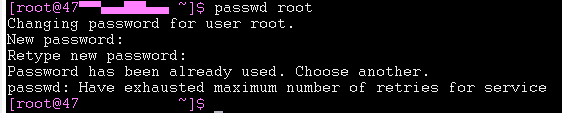
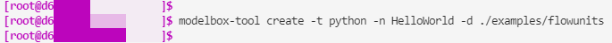

ModelBox 上手指南
准备工作
服务器端启动镜像
根据服务器端硬件规格下载ModelBox开发镜像，如X86+GPU的服务器可以用如下命令下载：
docker pull registry-cbu.huawei.com/modelbox/euler/modelbox_cuda101_develop:v1.0.8Arm+D310的服务器（如Atlas500）可以用如下命令下载：
docker pull registry-cbu.huawei.com/modelbox/euler/modelbox_ascend_aarch64_develop:v1.0.8其中cuda版本、镜像版本可以根据需要进行选择。下载成功后可以用docker images命令查看本机已有的镜像：

启动ModelBox镜像，X86+GPU版本可使用如下脚本：
#! /bin/bash # ssh map port [modify] SSH_MAP_PORT=50011 # editor map port [modify] EDITOR_MAP_PORT=1104 # http server port [modify] HTTP_SERVER_PORT=7788 # container name [modify] CONTAINER_NAME="modelbox_instance_`date +%s`_xxx" HTTP_DOCKER_PORT_COMMAND="-p $HTTP_SERVER_PORT:$HTTP_SERVER_PORT" sudo docker run -itd --gpus all \ -e NVIDIA_DRIVER_CAPABILITIES=compute,utility,video \ --tmpfs /tmp \ --tmpfs /run \ -v /sys/fs/cgroup:/sys/fs/cgroup:ro \ --name $CONTAINER_NAME \ -v /opt/modelbox:/opt/modelbox \ -v /home:/home \ -p $SSH_MAP_PORT:22 \ -p $EDITOR_MAP_PORT:1104 $HTTP_DOCKER_PORT_COMMAND \ registry-cbu.huawei.com/modelbox/euler/modelbox_cuda101_develop:v1.0.8Arm+D310版本可使用如下脚本：
#!/bin/bash # ssh map port, [modify] SSH_MAP_PORT=50011 # editor map port [modify] EDITOR_MAP_PORT=1144 # http server port [modify] HTTP_SERVER_PORT=7788 # container name [modify] CONTAINER_NAME="modelbox_instance_arm64_`date +%s`_xxx" HTTP_DOCKER_PORT_COMMAND="-p $HTTP_SERVER_PORT:$HTTP_SERVER_PORT" sudo docker run -itd --privileged --cap-add=SYS_PTRACE \ --tmpfs /tmp --tmpfs /run -v /sys/fs/cgroup:/sys/fs/cgroup:ro \ --device=/dev/davinci0 --device=/dev/davinci_manager --device=/dev/hisi_hdc --device=/dev/devmm_svm \ --name $CONTAINER_NAME -v /opt/modelbox:/opt/modelbox -v /home:/home \ -p $SSH_MAP_PORT:22 -p $EDITOR_MAP_PORT:1144 $HTTP_DOCKER_PORT_COMMAND \ registry-cbu.huawei.com/modelbox/euler/modelbox_ascend_aarch64_develop:v1.0.8脚本中注明[modify]的地方都可以根据自己的需要修改
启动后可以用
docker ps –a|grep modelbox看到本机已启动的所有镜像，其中镜像ID在第一列：
使用
docker exec -it $docker_id bash命令进入ModelBox容器：
进入容器后使用passwd root修改root用户密码（注意密码要求至少三类字符的组合——数字、字母、特殊符号）：

安装RTSP服务器，用于推送实时的RTSP视频流（注意是在容器外安装执行）。X86+GPU的服务器可以选择EasyDarwin，Arm版可以选择rtsp-simple-server。以rtsp-simple-server为例，下载链接为
https://github.com/aler9/rtsp-simple-server/releases，下载后解压得到可执行文件和配置文件：
打开rtsp-simple-server.yml可修改RTSP服务相关的配置参数，如端口号默认为8554，可以根据需要修改：

修改后执行命令nohup ./rtsp-simple-server &，即在后台启动了RTSP服务器。
PC端使用vscode远程连接ModelBox容器
安装Visual Studio Code（下称vscode，注意不要用1.58.x版本，最高只能用1.57.1，安装后关闭自动升级）
vscode中安装 Remote-SSH、Remote-Containers、Docker等插件
vscode上使用remote ssh添加连接：
在config中按照如下方式配置ModelBox容器的远程连接：

设置完成后，旁边目录就会出现远程目标，点击后面的图标，重新打开一个窗口：

打开之后，输入上面修改的容器root账号密码，稍等片刻，就可以连接上了：

点击Open folder, 可以直接打开docker中的文件：

想要在代码中实现跳转，需要在远端安装跳转工具，点击插件，然后插件上会出现
install in SSH: ...。点击后会就在远端安装该插件，一般安装C/C++, python等，安装好之后会在插件的SSH栏中出现：
安装PotPlayer播放器，用于播放rtsp视频流
第一个ModelBox应用
准备工作完成后，就可以在vscode中开发ModelBox应用了，第一个应用非常简单：打开一个mp4视频文件，推送到RTSP服务器，然后在PC端使用PotPlayer播放出来。
流程图开发
ModelBox根据流程图构建应用的处理逻辑，我们使用TOML格式的文件来描述第一个应用：
[driver] dir = ["/usr/local/"] skip-default = false [profile] profile=false trace=false dir="/tmp/" [log] level="DEBUG" [graph] format = "graphviz" graphconf = """digraph test { node [shape=Mrecord] queue_size = 16 video_input[type=flowunit, flowunit=video_input, device=cpu, deviceid=0, source_url="xxx/xxx.mp4"] videodemuxer[type=flowunit, flowunit=videodemuxer, device=cpu, deviceid=0] videodecoder[type=flowunit, flowunit=videodecoder, device=cpu, deviceid=0, pix_fmt=rgb] videoencoder[type=flowunit, flowunit=videoencoder, device=cpu, deviceid=0, default_dest_url="rtsp://ip:8554/stream", format=rtsp] video_input:stream_meta -> videodemuxer:stream_meta videodemuxer:video_packet -> videodecoder:video_packet videodecoder:frame_info -> videoencoder: frame_info }""" [flow] desc = "test for video streams"使用时，需要将video_input单元中的source_url属性内容修改为实际的mp4文件路径，将videoencoder单元default_dest_url属性内容中的ip修改为真实的服务器ip，端口号8554要与rtsp-simple-server或者EasyDarwin中配置的端口号保持一致。
如上所示，ModelBox使用graphviz格式描述流程图，我们可以把中间那一段digraph流程图定义内容拷贝到graphviz工具（如：
https://dreampuf.github.io/GraphvizOnline）中进行查看：
流程图执行
流程图开发好之后，在vscode terminal中使用modelbox-tool -verbose -log-level INFO flow -run xxx/xxx.toml执行该流程图：

打开浏览器，输入TOML文件中配置的default_dest_url地址，点击弹出对话框中的“打开PotPlayer专用播放”按钮：

弹出的PotPlayer将会播放TOML文件中配置的mp4视频文件
开发自己的流单元
第一个应用中使用的都是ModelBox自带的流单元，接下来我们用Python开发一个最简单的流单元，嵌入到上面的应用中：在画面左上方写上“Hello World”，再输出。
新建流单元
在
vscode terminal中执行modelbox-tool create -t python -n HelloWorld -d path-to-flowunits：
命令执行后将在指定路径下基于Python流单元模板生成HelloWorld流单元，包括一个py文件和一个toml配置文件：

在
HelloWorld.toml中配置该流单元的名称、类别、输入输出端口等信息，当前不用修改；HelloWorld.py中描述了该流单元的处理逻辑，这里我们增加OpenCV与numpy包的引用，修改其中的process函数如下：import cv2 import numpy as np … def process(self, data_context): # Process the data in_data = data_context.input("Input") out_data = data_context.output("Output") for buffer in in_data: width = buffer_img.get('width') height = buffer_img.get('height') channel = buffer_img.get('channel') img_data = np.array(buffer_img.as_object(), copy=False) img_data = img_data.reshape((height, width, channel)) cv2.putText(img_data, 'Hello World', (50, 50), cv2.FONT_HERSHEY_SIMPLEX, 1, (255, 0, 0), 2) out_buffer = self.create_buffer(img_data) out_buffer.copy_meta(buffer_img) out_data.push_back(out_buffer) return modelbox.Status.StatusCode.STATUS_SUCCESS
流程图执行方式
修改流程图TOML文件如下：
[driver] dir = ["/usr/local/" , "path-to-HelloWorld-flowunits"] skip-default = false [profile] profile=false trace=false dir="/tmp/" [log] level="DEBUG" [graph] format = "graphviz" graphconf = """digraph test { node [shape=Mrecord] queue_size = 16 video_input[type=flowunit, flowunit=video_input, device=cpu, deviceid=0, source_url="xxx/xxx.mp4"] videodemuxer[type=flowunit, flowunit=videodemuxer, device=cpu, deviceid=0] videodecoder[type=flowunit, flowunit=videodecoder, device=cpu, deviceid=0, pix_fmt=rgb] HelloWorld[type=flowunit, flowunit=HelloWorld, device=cpu, deviceid=0] videoencoder[type=flowunit, flowunit=videoencoder, device=cpu, deviceid=0, default_dest_url="rtsp://ip:8554/stream", format=rtsp] video_input:stream_meta -> videodemuxer:stream_meta videodemuxer:video_packet -> videodecoder:video_packet videodecoder:frame_info -> HelloWorld: Input HelloWorld: Output -> videoencoder: frame_info }""" [flow] desc = "test for video streams"其中[driver]配置项的dir中添加了HelloWorld流单元的路径，graphviz图定义中插入HelloWorld流单元，新的流程图如下所示：

在vscode terminal中执行该流程图，通过浏览器打开PotPlayer播放，可看到输出的视频。